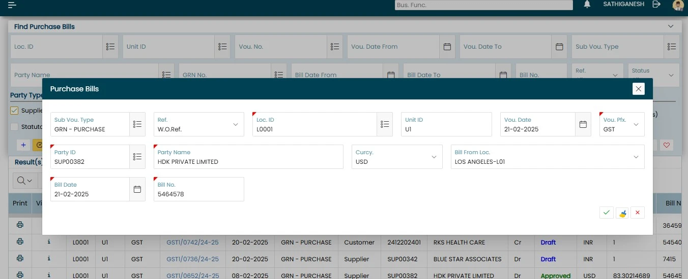
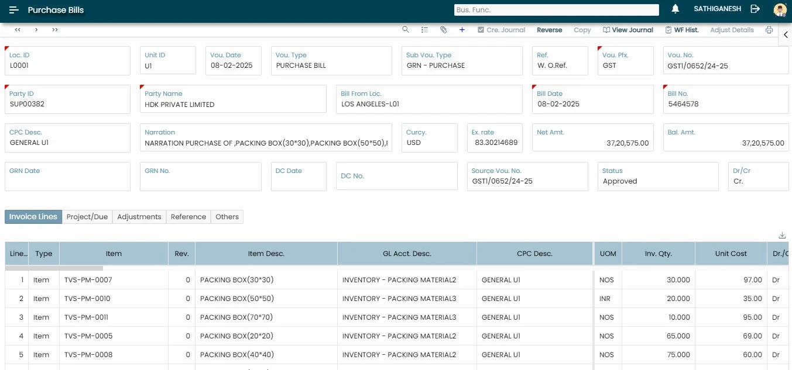

<div data-category="Financials" data-title="GRN Purchase (without reference)" data-updated="December 01, 2025" data-contributors="RoadmapIT" data-breadcrumb="Home,Financials,GRN-Purchase (without reference)">
  <div class="page-content">
    <p>A direct entry is a way of booking a bill without the reference of the GRN and without affecting the stock for a particular item. The matching type "GRN-Purchase (Without reference)".</p>
    <p>The GRN which are received will be loaded in this screen; the invoice can be created from this Screen.</p>
    <h5>Navigation path:</h5>
    <p class="fs-6">Financials \ Transactions \ Party Document \ Purchase Bills</p>
    <h2>Registering Invoice</h2>
    
    <ul style="list-style-type: none; align-content: center">
      <li class="mouse-icon">By Clicking the <i class="bi bi-plus fs-4 mx-2 text-primary"></i> Add button we can create new document</li>
      <li class="mouse-icon">Enter Sub Vou.Type as GRN-Purchase</li>
      <li class="mouse-icon">Select Ref as W.O Ref.</li>
      <li class="mouse-icon">Select Loc ID  from LOV, Unit will be auto populated</li>
      <li class="mouse-icon">Select Vou.Pfx</li>
      <li class="mouse-icon">Select Party ID from LOV, Party name will be auto populated</li>
      <li class="mouse-icon">Select Bill date and Enter Bill number</li>
      <li class="mouse-icon">Click <i class="bi bi-check-lg fs-4 mx-2 text-success"></i></li>
    </ul>
    
    <ul style="list-style-type: none; align-content: center">
      <li class="mouse-icon">Invoice Receipt can be created directly in this screen.</li>
      <li class="mouse-icon">Enter the Line items, enter the Quantity and unit cost and click <i class="bi bi-check-lg fs-4 mx-2 text-success"></i> to save the entry.</li>
      <li class="mouse-icon">Document number gets generated.</li>
      <li class="mouse-icon">After verify the  value Click on Create Journal; Journal gets created.</li>
      <li class="mouse-icon">Press the post button to complete the entry and the document will be moved to the workflow document control.</li>
    </ul>
  </div>
</div>
